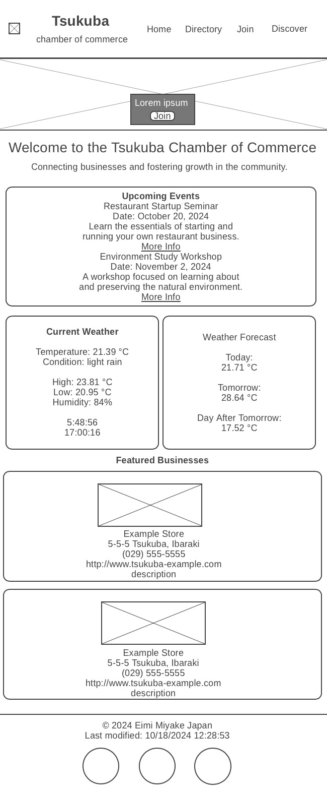
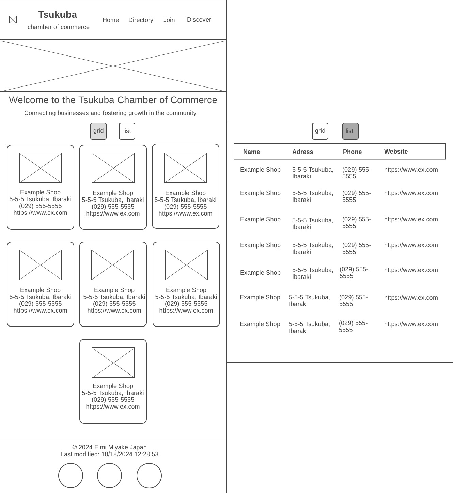
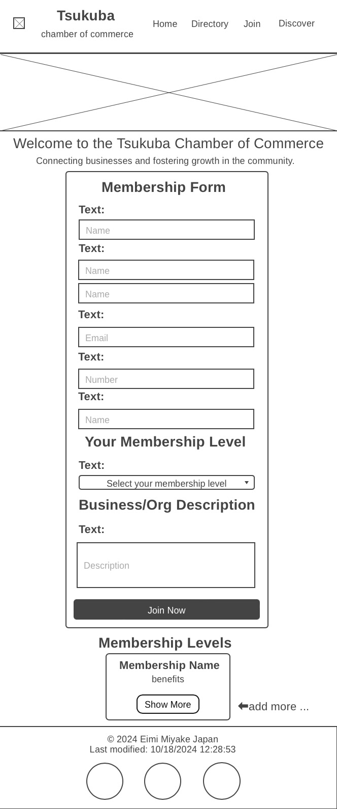
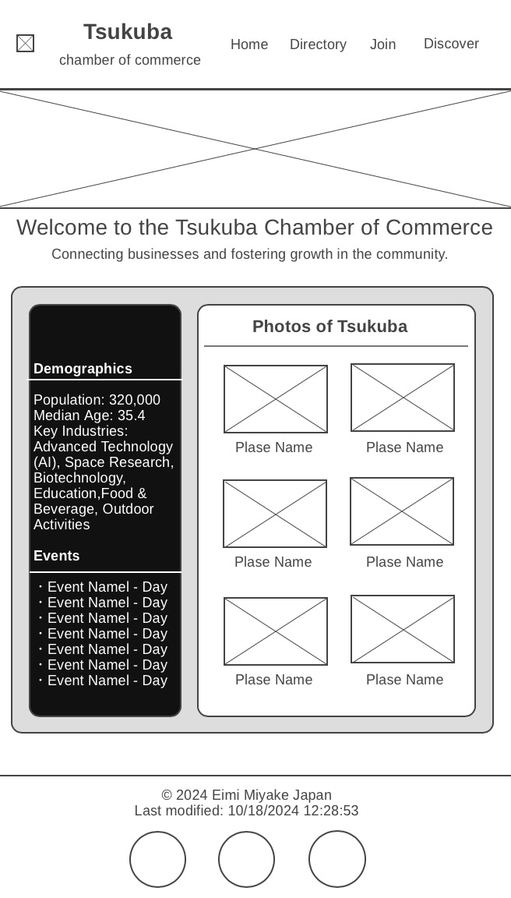
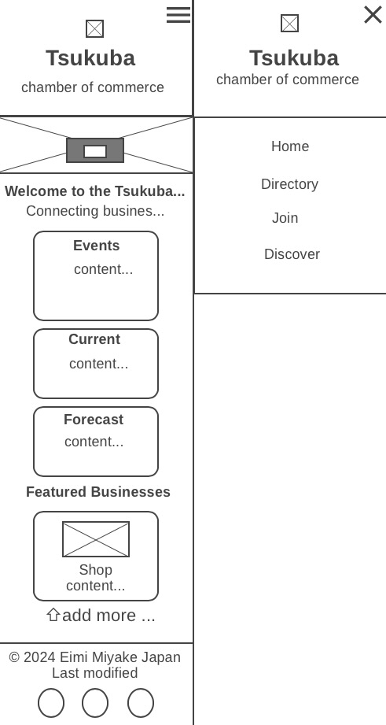
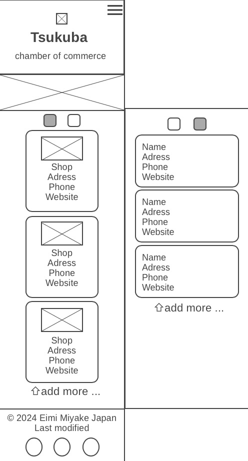
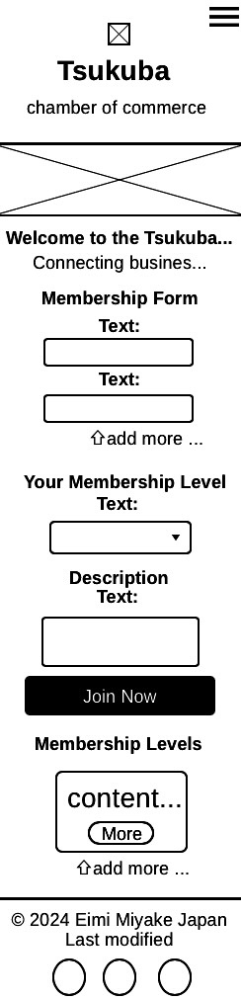
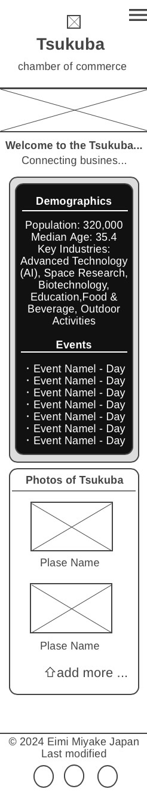

A comprehensive guide to the structure, design, and purpose of our Chamber of Commerce website
Site Name: Tsukuba Chamber of Commerce
This site name focuses on supporting local businesses and shops in Tsukuba City, clearly establishing it as a source of business support and information.
The purpose of the "Tsukuba Chamber of Commerce" website is to support and promote local businesses in Tsukuba City.
It’s a convenient site where residents, visitors, and business owners can easily find local businesses, get the latest updates on events, and learn about membership options.
This website also promote Tsukuba City's unique combination of nature and advanced urban features to business owners and tourists, enhancing community connection and economic growth.
Primary Color: For headings, Footer and accents
Secondary Color: For content-layout background color
Secondary Color: Background color of the page
Background Color: Color of the cards
Text Color: For paragraphs, hover color, bottom color, form color
Text Color: For a hover color
Text Color: For background color, paragraphs
Text Color: For title, main paragraphs
Text Color: For .nav-links a
Home Page
Directory Page
Join Page
Discover Page
Home Page
Directory Page
Join Page
Discover Page
